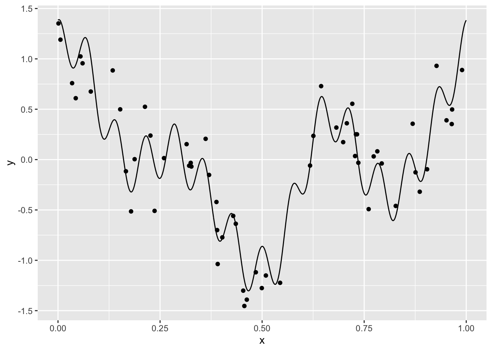
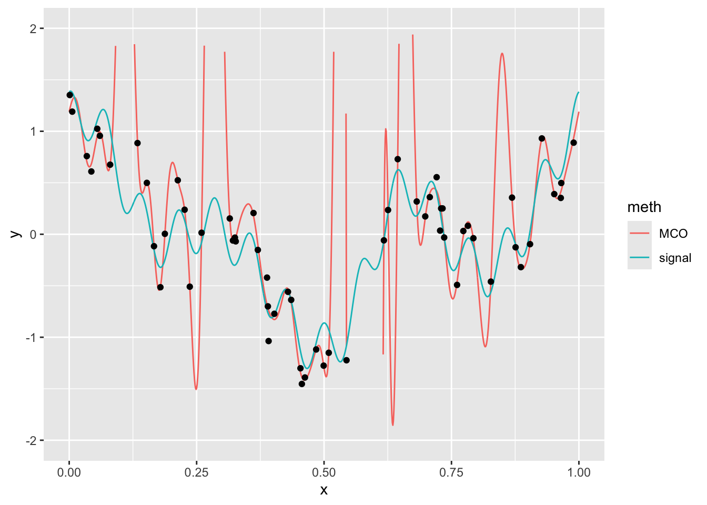
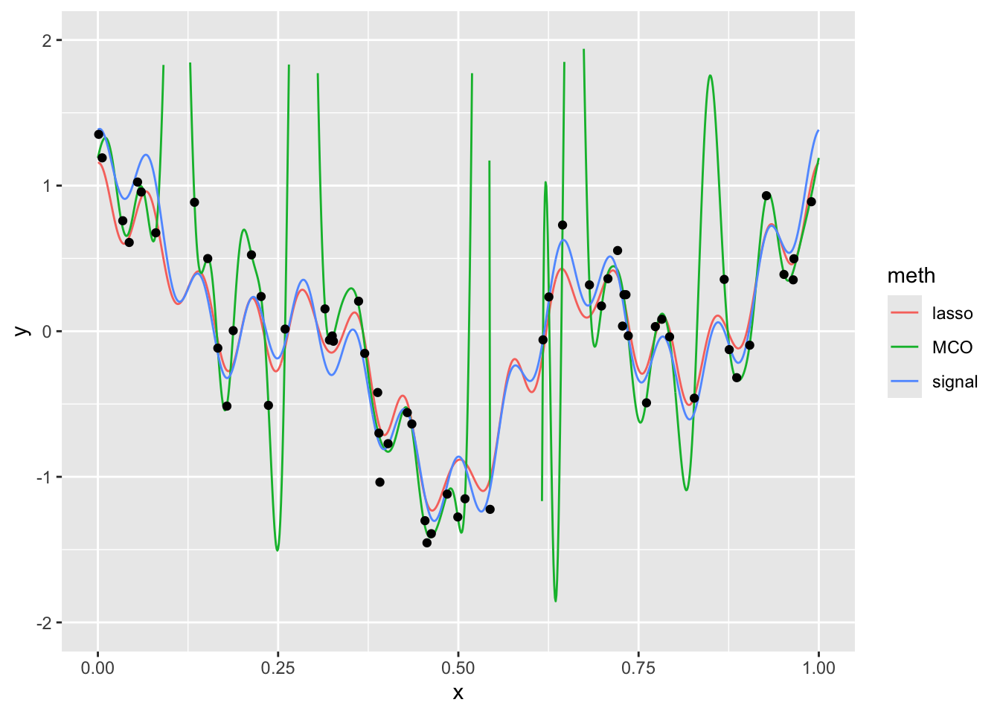

8 Régularisation des moindre carrés : Ridge, Lasso et elastic net
Exercice 1 (Questions de cours) A, B, B, B, A (pour un bon choix de \(\lambda\)) et B, A, C et D.
Exercice 2 (Projection et régression ridge) L’ajustement avec la méthode ridge est \[ \begin{align*} \hat Y_{\mathrm{ridge}}&= X(X'X - \kappa I)^{-1}X'Y=H^*(\kappa)Y. \end{align*} \] Nous avons que \(H^*(\kappa)H^*(\kappa) \neq H^*(\kappa)\) sauf si \(\kappa=0\) (cas des MC) et donc ce n’est pas un projecteur.
Exercice 3 (Variance des valeurs ajustées avec une régression ridge) \(X\) de rang \(p\). Soit la décomposition en valeurs singulières de \(X\)~: \[ \begin{align*} X &=U\Lambda V' \end{align*} \] avec \(U\) de dimension \(n\times p\) (avec \(U'U=I_p\) mais nous n’avons pas \(UU'\)…), \(V\) \(p\times p\) (avec \(V'V=VV'=I_p\)) et \(\Lambda=\text{diag}(\lambda_j)\).
De cette décomposition et de ses propriétés nous déduisons \[ \begin{align*} X' &=V\Lambda U'\\ X'X &=V\Lambda^2 V' (X'X)^{-1} &=V\Lambda^{-2} V'\\ (X'X + \kappa I)^{-1} &=(V\Lambda^2 V' + \kappa VV')^{-1} = V(\text{diag}(\lambda_j^2 + \kappa)^{-1} V' \end{align*} \] L’ajustement avec la méthode ridge est \[ \begin{align*} \hat Y_{\mathrm{ridge}}&= X(X'X - \kappa I)^{-1}X'Y=U\Lambda V' V(\text{diag}(1/(\lambda_j^2 + \kappa))V'V\Lambda U'Y = U\Lambda \text{diag}(1/(\lambda_j^2 + \kappa)) \Lambda U'Y =U\text{diag}(\lambda_j^2/(\lambda_j^2 + \kappa))U'Y \end{align*} \] et celui des MCO est \[ \begin{align*} \hat Y&= X(X'X)^{-1}X'Y=U\Lambda V' V(\Lambda^{-2}) V'V\Lambda U'Y = UU'Y. \end{align*} \]
Calculons leur norme carrée \[ \begin{align*} \|\hat Y_{\mathrm{ridge}}\|^2&=\hat Y_{\mathrm{ridge}}'\hat Y_{\mathrm{ridge}} =Y'U\text{diag}(\lambda_j^2/(\lambda_j^2 + \kappa))U'U\text{diag}(\lambda_j^2/(\lambda_j^2 + \kappa))U'Y=Y'U\text{diag}(\lambda_j^4/(\lambda_j^2 + \kappa)^2)U'Y\\ \|\hat Y\|^2&=\hat Y\hat Y =Y'UU'UU'Y=Y'UU'Y\\ \end{align*} \] Comme \(X\) est de rang \(p\) on a \(\lambda_j>0\) pour tout \(j\). Si on choisit \(\kappa\) tel que \(\lambda_j^4/(\lambda_j^2 + \kappa)^2<1\) pour toutes les valeurs \(j\) on obtient le résultat.
\(X\) de rang \(r<p\). Nous avons toujours la décomposition en valeurs singulières de \(X\). Nous pouvons l’écrire comme \[ \begin{align*} X &=U\Lambda V' \end{align*} \] (avec \(U'U=I_p\) mais nous n’avons pas \(UU'\)…), \(V\) \(p\times p\) (avec \(V'V=VV'=I_p\)) et \(\Lambda=\text{diag}(\lambda_1,\dotsc,\lambda_r,0,\dotsc, 0)\) mais après le rang \(r\) (avec \(r<p\)) les valeurs singulières sont nulles.
Ici \(\Lambda\) n’est plus inversible ou encore \(X'X\) n’est pas inversible. On ne peut donc écrire l’ajustement par MCO comme \(X(X'X)^{-1}X'Y\) car cela n’a pas de sens, mais on peut prendre l’inverse généralisé de Moore-Penrose à la place de l’inverse: \[ \begin{align*} \hat Y&=P_X Y= X(X'X)^{+}X'Y \end{align*} \] Techniquement pour calculer cet inverse il suffit d’inverser les valeurs propres non nulles (ou les carrés des valeurs singulières) et de laisser les autres à zéros: \[ \begin{align*} (X'X)^{+}&=V\text{diag}(\frac{1}{\lambda^2_1},\dotsc,\frac{1}{\lambda^2_r},0,\dotsc,0)V' \end{align*} \] Si on note (avec un abus de notation) \(\Lambda^{-2}=\text{diag}(\frac{1}{\lambda^2_1},\dotsc,\frac{1}{\lambda^2_r},0,\dotsc,0)\) on a alors les mêmes formules pour les ajustements et les normes et donc la même conclusion.
Exercice 4 (Nombre effectif de paramètres de la régression ridge)
Rappelons que pour une valeur \(\kappa\) donnée, le vecteur de coefficients de la régression ridge s’écrit \[ \hat \beta_{\mathrm{ridge}}(\kappa) = (X'X + \kappa I)^{-1}X'Y. \] et donc l’ajustement par la régression ridge est \[ \hat Y_{\mathrm{ridge}}(\kappa)=X(X'X + \kappa I)^{-1}X'Y=H^*(\kappa)Y \]
Soit \(U_i\) le vecteur propre de \(A\) associé à la valeur propre \(d^2_i\). Nous avons donc par définition que \[ \begin{eqnarray*} AU_i&=&d^2_iU_i\\ AU_i+\lambda U_i&=&d^2_iU_i+\lambda U_i=(d^2_i+\lambda) U_i\\ (A+\lambda I_p)U_i&=&(d^2_i+\lambda) U_i, \end{eqnarray*} \] c’est-à-dire que \(U_i\) est aussi vecteur propre de \(A+\lambda I_p\) associé à la valeur propre \(\lambda+d^2_i\).
Nous savons que \(X=QD P'\) avec \(Q\) et \(P\) matrices orthogonales et \(D=\text{diag}(d_1,\dotsc,d_p)\). Puisque \(Q\) est orthogonale, nous avons, par définition, \(Q'Q=I\). Nous avons donc que \(X'X=(QD P')'QD P'=PDQ'QDP'=PD^2P'\). Puisque \(P\) est orthogonale \(P'P=I_p\) et \(P^{-1}=P\). \[ \begin{eqnarray*} \text{tr}(X(X'X+\lambda I_p)^{-1}X')&=&\text{tr}((X'X+\lambda I_p)^{-1}X'X)\\ &=&\text{tr}((PD^2P'+\lambda PP')^{-1}PD^2P')\\ &=&\text{tr}((P(D+\lambda I_p )P')^{-1}PD^2P'). \end{eqnarray*} \] Ainsi \[ \begin{eqnarray*} \text{tr}(X(X'X+\lambda I_p)^{-1}X')&=&\text{tr}( (P')^{-1}(D+\lambda I_p )^{-1} P^{-1} PD^2P')\\ &=&\text{tr}( (P')^{-1}(D+\lambda I_p )^{-1} D^2P')\\ &=&\text{tr}( (D+\lambda I_p )^{-1} D^2). \end{eqnarray*} \] Selon la définition de \(H^*(\kappa)\), nous savons que sa trace vaut donc \[ \begin{eqnarray*} \text{tr}( (D+\kappa I_p )^{-1} D^2). \end{eqnarray*} \] Comme \(D\) et \(I_p\) sont des matrices diagonales, leur somme et produit sont simplement leur somme et produit terme à terme des éléments de la diagonale, et donc cette trace (somme des éléments de la diagonale) vaut \[ \sum_{i=1}^{p}{\frac{d_j^2}{d_j^2+\kappa}}. \]
Exercice 5 (Estimateurs à rétrecissement - shrinkage)
Soit le modèle de régression \[ Y=X\beta+\varepsilon. \] En le pré-multipliant par \(P\), nous avons \[ Z=PY=PX\beta+P\varepsilon=DQ\beta+\eta=D\gamma+\eta. \] Puisque \(\varepsilon\sim\mathcal{N}(0,\sigma^2 I_n)\) et \(P\) fixé, nous avons que \(\eta=P\varepsilon\) suit une loi normale de moyenne \(\mathbf E(\eta)=P\mathbf E(\varepsilon)=0\) et de variance \(\mathop{\mathrm{V}}(\eta)=P\mathop{\mathrm{V}}(\varepsilon)P'=\sigma^2PP'=\sigma^2I_n\).
Par définition, \(Z\) vaut \(PY\) et nous savons que \(Y\sim\mathcal{N}(X\beta,\sigma^2 I_n)\), donc \(Z\sim\mathcal{N}(PX\beta,\sigma^2 PP')\), c’est-à-dire \(Z\sim\mathcal{N}(DQ\beta,\sigma^2 I_n)\) ou encore \(Z\sim\mathcal{N}(D\gamma,\sigma^2 I_n)\). En utilisant la valeur de \(D\) nous avons \[ \begin{eqnarray*} D\gamma&=& \begin{pmatrix} \Delta \gamma\\ 0 \end{pmatrix}. \end{eqnarray*} \] Donc \(Z_{1:p}\sim\mathcal{N}(\Delta\gamma,\sigma^2I_p)\).
Soit un estimateur de \(\beta\) linéaire en \(Y\)~: \(\hat \beta=AY\). Soit l’estimateur de \(\gamma=Q\beta\) linéaire en \(Y\)~: \(\hat\gamma=Q AY\). Pour calculer leur matrice de l’EQM, nous devons calculer leur biais et leur variance. Le biais de \(\hat \beta\) est \[ B(\hat \beta)=\mathbf E(\hat \beta)-\beta=\mathbf E(AY)-\beta=A\mathbf E(Y)-\beta=AX\beta-\beta. \] Le biais de \(\hat\gamma\) s’écrit \[ B(\hat\gamma)=\mathbf E(\hat \gamma)-\gamma=\mathbf E(Q\hat \beta)-\gamma=Q\mathbf E(\hat \beta)-\gamma=QAX\beta-\gamma. \] Comme \(\gamma=Q\beta\) et \(Q'Q=I_p\) nous avons \[ B(\hat\gamma)=QAXQ'\gamma-\gamma. \] La variance de \(\hat \beta\) s’écrit \[ \mathop{\mathrm{V}}(\hat \beta)=\mathop{\mathrm{V}}(AY)=A\mathop{\mathrm{V}}(Y)A'=\sigma^2 AA', \] et celle de \(\hat \gamma\) est \[ \mathop{\mathrm{V}}(\hat\gamma)=\mathop{\mathrm{V}}(Q\hat \beta)=Q\mathop{\mathrm{V}}(\hat \beta)Q'=\sigma^2 QAA'Q'. \] Nous en déduisons que les matrices des EQM sont respectivement \[ \begin{eqnarray*} \mathop{\mathrm{EQM}}(\hat \beta)&=&(AX\beta-\beta)(AX\beta-\beta)'+\sigma^2 AA',\\ \mathop{\mathrm{EQM}}(\hat \gamma)&=&(QAXQ'\gamma-\gamma)(QAXQ'\gamma-\gamma)' + \sigma^2 QAA'Q', \end{eqnarray*} \] et enfin les traces de ces matrices s’écrivent \[ \begin{eqnarray*} \text{tr}(\mathop{\mathrm{EQM}}(\hat \beta))&=&(AX\beta-\beta)'(AX\beta-\beta)+\sigma^2\text{tr}(AA'),\\ \text{tr}(\mathop{\mathrm{EQM}}(\hat \gamma))&=&(QAXQ'\gamma-\gamma)'(QAXQ'\gamma-\gamma)+ \sigma^2\text{tr}(AA').\\ \end{eqnarray*} \] Rappelons que \(\gamma=Q\beta\) et que \(Q'Q=I_p\), nous avons donc \[ \begin{eqnarray*} \text{tr}(\mathop{\mathrm{EQM}}(\hat \gamma))&=&\gamma'(QAXQ'-I_p)'(QAXQ'-I_p)\gamma+ \sigma^2\text{tr}(AA')\\ &=&\beta'(QAX - Q)'(QAX - Q)\beta+ \sigma^2\text{tr}(AA')\\ &=&\beta'(AX-I_p)Q'Q(AX-I_p)\beta+ \sigma^2\text{tr}(AA')\\ &=&\beta'(AX-I_p)(AX-I_p)\beta+ \sigma^2\text{tr}(AA')=\text{tr}(\mathop{\mathrm{EQM}}(\hat \beta)). \end{eqnarray*} \] En conclusion, que l’on s’intéresse à un estimateur linéaire de \(\beta\) ou à un estimateur linéaire de \(\gamma\), dès que l’on passe de l’un à l’autre en multipliant par \(Q\) ou \(Q'\), matrice orthogonale, la trace de l’EQM est identique, c’est-à-dire que les performances globales des 2 estimateurs sont identiques.
Nous avons le modèle de régression suivant : \[ Z_{1:p}=\Delta\gamma+\eta_{1:p}, \] et donc, par définition de l’estimateur des MC, nous avons \[ \hat \gamma_{\mathrm{MC}}=(\Delta'\Delta)^{-1}\Delta'Z_{1:p}. \] Comme \(\Delta\) est une matrice diagonale, nous avons \[ \hat \gamma_{\mathrm{MC}}=\Delta^{-2}\Delta'Z_{1:p}=\Delta^{-1}Z_{1:p}. \] Cet estimateur est d’expression très simple et il est toujours défini de manière unique, ce qui n’est pas forcément le cas de \(\hat \beta_{\mathrm{MC}}\).
Comme \(Z_{1:p}\sim\mathcal{N}(\Delta\gamma,\sigma^2 I_p)\) nous avons que \(\hat \gamma_{\mathrm{MC}}=\Delta^{-1}Z_{1:p}\) suit une loi normale d’espérance \(\mathbf E(\Delta^{-1}Z_{1:p})=\Delta^{-1}\mathbf E(Z_{1:p})=\gamma\) et de variance \(\mathop{\mathrm{V}}(\hat \gamma_{\mathrm{MC}})=\sigma^2\Delta^{-2}\). Puisque \(\hat \gamma_{\mathrm{MC}}\) est un estimateur des MC, il est sans biais, ce qui est habituel.
L’EQM de \(\hat \gamma_{\mathrm{MC}}\), estimateur sans biais, est simplement sa variance. Pour la \(i^e\) coordonnée de \(\hat \gamma_{\mathrm{MC}}\), l’EQM est égal à l’élément \(i,i\) de la matrice de variance \(\mathop{\mathrm{V}}(\hat \gamma_{\mathrm{MC}})\), c’est-à-dire \(\sigma^2/\delta_i^2\). La trace de l’EQM est alors simplement la somme, sur toutes les coordonnées \(i\), de cet EQM obtenu.
Par définition \(\hat \gamma(c)=\text{diag}(c_i)Z_{1:p}\) et nous savons que \(Z_{1:p}\sim\mathcal{N}(\Delta\gamma,\sigma^2 I_p).\) Nous obtenons que \(\hat \gamma(c)\) suit une loi normale d’espérance \(\mathbf E(\text{diag}(c_i)Z_{1:p})=\text{diag}(c_i)\Delta\gamma\) et de variance \[ \mathop{\mathrm{V}}(\hat \gamma(c))= \text{diag}(c_i)\mathop{\mathrm{V}}(Z_{1:p})\text{diag}(c_i)'= \sigma^2\text{diag}(c_i^2). \] La loi de \(\hat \gamma(c)\) étant une loi normale de matrice de variance diagonale, nous en déduisons que les coordonnées de \(\hat \gamma(c)\) sont indépendantes entre elles.
Calculons l’EQM de la \(i^e\) coordonnée de \(\hat \gamma(c)\) \[ \mathop{\mathrm{EQM}}(\hat \gamma(c)_i)=\mathbf E(\hat \gamma(c)_i -\gamma)^2=\mathbf E(\hat \gamma(c)_i^2)+ \mathbf E(\gamma_i^2)-2\mathbf E(\hat \gamma(c)_i \gamma_i). \] Comme \(\gamma_i\) et que \(\mathbf E(\hat \gamma(c)_i^2)=\mathop{\mathrm{V}}(\hat \gamma(c)_i^2)+\{\mathbf E(\hat \gamma(c)_i^2)\}^2\), nous avons \[ \begin{align*} \mathop{\mathrm{EQM}}(\hat \gamma(c)_i)&=\sigma^2 c_i^2+(c_i\delta_i\gamma_i)^2+\gamma_i^2-2\gamma_i\mathbf E(\hat \gamma(c)_i)\\ &=\sigma^2 c_i^2+(c_i\delta_i\gamma_i)^2+\gamma_i^2-2\sigma^2 c_i\delta_i\gamma_i= \sigma^2c_i^2+\gamma_i^2(c_i\delta_i -1)^2. \end{align*} \]
De manière évidente si \(\gamma_i^2\) diminue, alors l’EQM de \(\hat \gamma(c)_i\) diminue aussi. Calculons la valeur de l’EQM quand \(\gamma_i^2=\frac{\sigma^2}{\delta_i^2}\frac{(1/\delta_i)+c_i}{(1/\delta_i)-c_i}\). Nous avons, grâce à la question précédente, \[ \begin{eqnarray*} \mathop{\mathrm{EQM}}(\hat \gamma(c)_i)&=&\sigma^2 c_i^2+(c_i\delta_i -1)^2\frac{\sigma^2}{\delta_i^2}\frac{(1/\delta_i)+c_i}{(1/\delta_i)-c_i}\\ &=&\sigma^2 c_i^2+\frac{\sigma^2}{\delta_i^2}(1 - c_i\delta_i)^2\frac{1+\delta_ic_i}{1-\delta_ic_i}\\ &=&\sigma^2 c_i^2+\frac{\sigma^2}{\delta_i^2}(1 - c_i\delta_i)(1+\delta_ic_i)\\ &=&\sigma^2 c_i^2+\frac{\sigma^2}{\delta_i^2}(1-\delta_i^2c_i^2)\\ &=&\sigma^2 c_i^2+\frac{\sigma^2}{\delta_i^2}-\sigma^2c_i^2=\frac{\sigma^2}{\delta_i^2}\\ &=&\mathop{\mathrm{EQM}}(\hat \gamma_{\mathrm{MC}}), \end{eqnarray*} \] d’où la conclusion demandée.
Par définition de \(\hat \gamma(c)\), nous avons \[ \begin{eqnarray*} \hat \gamma(c)&=&\text{diag}(c_i)Z_{1:p}=\text{diag}(\frac{\delta_i}{\delta_i^2+\kappa})Z_{1:p}\\ &=&(\Delta'\Delta + \kappa I_p)^{-1}\Delta'Z_{1:p}, \end{eqnarray*} \] puisque \(\Delta\) est diagonale. De plus nous avons \[ D = \bigl( \begin{smallmatrix} \Delta\\ 0 \end{smallmatrix}\bigr), \] ce qui entraîne que \(D'D=\Delta'\Delta\) et \(D'Z=\Delta' Z_{1:p}\). Nous obtenons donc \[ \hat \gamma(c)=(D'D+\kappa I_p)^{-1}D'Z. \] Rappelons que \(D=PXQ'\) avec \(P\) et \(Q\) matrices orthogonales, nous avons alors \[ \begin{eqnarray*} \hat \gamma(c)&=&(QX'P'PXQ' + \kappa I_p)^{-1} D'Z=(QX'XQ' + \kappa QQ')^{-1}D'Z\\ &=&(Q(X'X + \kappa I_p)Q')^{-1}D'Z=(Q')^{-1}(X'X + \kappa I_p)^{-1}(Q)^{-1}D'Z\\ &=&Q(X'X + \kappa I_p)^{-1}Q'D'Z. \end{eqnarray*} \] Comme \(Z=PY\) et \(D=PXQ'\), nous avons \[ \hat \gamma(c)=Q(X'X + \kappa I_p)^{-1}Q' QX'P' PY=Q(X'X + \kappa I_p)^{-1}XY. \] Enfin, nous savons que \(Q\hat\gamma=\hat \beta\), nous en déduisons que \(\hat\gamma=Q'\hat \beta\) et donc que dans le cas particulier où \(c_i=\frac{\delta_i}{\delta_i^2+\kappa}\) nous obtenons \[ \hat \beta=Q\hat \gamma(c)=(X'X + \kappa I_p)^{-1}XY, \] c’est-à-dire l’estimateur de la régression ridge.
Exercice 6 (Coefficient constant et régression sous contraintes)
Comme chaque variable \(X_j\), \(1\leq j \leq (p-1)\), est centrée on a \[ \begin{align*} \bar X_j =0 =\frac{1}{n}<\mathbf{1}_n, X_j> \end{align*} \] donc \(\forall z\in\mathsf{Vect}(X_\xi)\) on a \(z=X_\xi\alpha\) avec \(\alpha\in\mathbb R^{p-1}\) et donc \[% \begin{align*} <\mathbf{1}, z>&=\mathbf{1}' X_\xi\alpha = 0 \end{align*} \] ou écrit autrement \(\mathsf{Vect}(\mathbf{1}) \stackrel{\perp}{\oplus} \mathsf{Vect}(X_{\xi})\).
La fonction à minimiser est \(\|Y-X\beta\|^2+\lambda J(\beta_\xi)\) et on a la décomposition unique de \(Y\): \(Y=P_X Y + P_{X^\perp} Y\) que l’on peut insérer dans la fonction à minimiser: \[% \begin{align*} \|Y-X\beta\|^2+\lambda J(\beta_\xi)&=\|P_X Y + P_{X^\perp} Y-X\beta\|^2+\lambda J(\beta_\xi) \end{align*} \] Comme \(X\beta\) est dans \(\mathsf{Vect}(X)\) donc par Pythagore on a \[% \begin{align*} \|Y-X\beta\|^2+\lambda J(\beta_\xi)&=\|P_{X^\perp} Y\|^2 + \|P_X Y-X\beta\|^2+\lambda J(\beta_\xi) \end{align*} \] L’argument du minimum (sur \(\beta\)) ne dépend pas de \(\|P_{X^\perp} Y\|^2\) (qui ne dépend pas de \(\beta\)) et donc nous pouvons donc minimiser la fonction \[ \begin{align*} \|P_X Y-X\beta\|^2+\lambda J(\beta_\xi) \end{align*} \]
De la question 1. nous avons que \(P_X Y= P_\mathbf{1}Y + P_{X_\xi} Y\) et donc par Pythagore nous pouvons minimiser la fonction \[ \begin{align*} \|P_X Y-X\beta\|^2+\lambda J(\beta_\xi) = \|P_\mathbf{1}Y - \mathbf{1}\beta_p \|^2 + \|P_{X_\xi} Y-X_\xi\beta_\xi\|^2+\lambda J(\beta_\xi) \end{align*} \] Comme \(P_\mathbf{1}Y = \mathbf{1}(\mathbf{1}'\mathbf{1})^{-1}\mathbf{1}' Y = \bar y \mathbf{1}\) on a donc que \(\hat\beta_p =\bar y\) et que les autres coefficients sont obtenus en minimisant \[ \begin{align*} \|P_{X_\xi} Y-X_\xi\beta_\xi\|^2+\lambda J(\beta_\xi) \end{align*} \] ou, en refaisant le même raisonnement qu’en question 2 avec \(Y=P_{X_\xi} Y + P_{X_\xi^\perp}Y\) et Pythagore, on peut aussi minimiser \[ \begin{align*} \|Y-X_\xi\beta_\xi\|^2+\lambda J(\beta_\xi). \end{align*} \]
Exercice 7 (Unicité pour la régression lasso, Giraud (2014))
Prenons deux solutions du lasso \(\hat\beta_1\) et \(\hat\beta_2\), on a donc qu’ils réalisent le minimum: \[ \begin{align*} \|Y-X\hat\beta_1\|^2+\lambda \|\hat\beta_1\|_1=\|Y-X\hat\beta_2\|^2+\lambda \|\hat\beta_2\|_1 = \mathrm{mini} \end{align*} \] Prenons le milieu \(\hat \beta = (\hat\beta_1 + \hat\beta_2)/2\) on a donc \[ \begin{align*} \|Y-X\hat\beta\|^2+\lambda \|\hat\beta\|_1&= \|Y-X\hat\beta_1/2 -X\hat\beta_2/2 \|^2 + \lambda \|\hat\beta_1/2 + \hat\beta_2/2\|_1 \end{align*} \] Comme \(\|.\|_1\) est convexe on a donc que \[ \begin{align*} \lambda \|\hat\beta_1/2 + \hat\beta_2/2\|_1\leq \lambda \|\hat\beta_1/2\|_1 + \|\hat\beta_2/2\|_1 = \lambda/2 (\|\hat\beta_1\|_1 + \|\hat\beta_2\|_1 ) \end{align*} \] D’où l’inégalité \[ \begin{align*} \|Y-X\hat\beta\|^2+\lambda \|\hat\beta\|_1&\leq \|Y/2 -X\hat\beta_1/2 + Y/2 -X\hat\beta_2/2 \|^2 + \lambda/2 (\|\hat\beta_1\|_1 + \|\hat\beta_2\|_1 ) \end{align*} \] Maintenant comme \(Z\in\mathbb R^n, Z\mapsto \|Y-Z\|^2\) est une fonction strictement convexe on a l’inégalité stricte (si \(X\hat\beta_1\neq X\hat\beta_2\)) \[ \begin{align*} \|Y-X\hat\beta\|^2+\lambda \|\hat\beta\|_1&< \|Y/2-X\hat\beta_1/2\|^2 + \|Y/2-X\hat\beta_2/2 \|^2 + \lambda/2 (\|\hat\beta_1\|_1 + \|\hat\beta_2\|_1 )\\ &=\frac{1}{2}(\|Y-X\hat\beta_1\|^2 \lambda\|\hat\beta_1\|_1) + \frac{1}{2}(\|Y-X\hat\beta_2\|^2 \lambda\|\hat\beta_2\|_1) = \mathrm{mini} \end{align*} \] ce qui contredit l’hypothèse du minimum atteint en \(\hat\beta_1\) ou \(\hat\beta_2\), donc \(X\hat\beta_1= X\hat\beta_2\)
En utilisant la question précédente on ne peut pas avoir deux minimiseurs globaux du lasso avec \(X\hat\beta_1\neq X\hat\beta_2\) donc on note la valeur unique \(X\hat\beta\).
Si on a 2 vecteurs \(z_1\) et \(z_2\) dans les sous-différentiels on a \[ \begin{align} -2X'(Y-\mu \mathbf{1}-X\hat\beta)+ z_1&=0\\ -2X'(Y-\mu \mathbf{1}-X\hat\beta)+ z_2&=0 \end{align} \] Comme \(X\hat\beta\) est unique, en faisant la différence on obtient que \(z_1-z_2=0\), on a donc un vecteur \(z=z_1=z_2\) unique.
Pour une valeur quelconque réalisant le minimum du lasso \(X\hat\beta\) est unique on a le vecteur unique \(z\) qui s’écrit \[% \begin{align} z&=2X'(Y-\mu \mathbf{1}-X\hat\beta) \end{align} \] Il en est de même pour l’ensemble des coordonnées de \(z\) valant \(\pm \lambda\).
Comme on a nécessairement que quand \(\hat\beta_j\neq 0\) alors \(z_j=\pm\lambda\) on a donc que l’ensemble \(\xi\) contient les coordonnées non nulles de \(\hat\beta\).
La condition nécessaire et suffisante est \[% \begin{align} -2X'(Y-\mu \mathbf{1}-X\hat\beta)+ z&=0 \end{align} \] Comme \(\xi\) contient les coordonnées non nulles on se restreint à \(\xi\) et on a \[% \begin{align} -2X_\xi'(Y-\mu \mathbf{1}-X_\xi\hat\beta_\xi)+ z&=0\\ 2X_\xi'X_\xi\hat\beta_\xi &= 2X_\xi'(Y-\mu \mathbf{1}) - z_\xi &= \\ \end{align} \] et si \({\mathcal{H}}_1'\) (\(X_\xi\) est de \[\begin{align*} \|Y-X\hat\beta\|^2+\lambda \|\hat\beta\|_1&< \|Y/2-X\hat\beta_1/2\|^2 + \|Y/2-X\hat\beta_2/2 \|^2 + \lambda/2 (\|\hat\beta_1\|_1 + \|\hat\beta_2\|_1 )\\ &=\frac{1}{2}(\|Y-X\hat\beta_1\|^2 \lambda\|\hat\beta_1\|_1) + \frac{1}{2}(\|Y-X\hat\beta_2\|^2 \lambda\|\hat\beta_2\|_1) = \mathrm{mini} \end{align*}\] plein rang) alors \(X_\xi'X_\xi\) inversible et donc \[ \begin{align} \hat\beta_\xi&= (X_\xi'X_\xi)^{-1} (X_\xi'(Y-\mu \mathbf{1}) - z_\xi/2) \end{align} \] unique.
Exercice 8
library(tidyverse) signal <- read_csv("../donnees/courbe_lasso.csv") donnees <- read_csv("../donnees/echan_lasso.csv") ggplot(signal)+aes(x=x,y=y)+geom_line()+ geom_point(data=donnees,aes(x=X,y=Y))
Nous cherchons à reconstruire le signal à partir de l’échantillon. Bien entendu, vu la forme du signal, un modèle linéaire de la forme \[ y_i=\beta_0+\beta_1x_i+\varepsilon_i \] n’est pas approprié. De nombreuses approches en traitement du signal proposent d’utiliser une
baseoudictionnairereprésentée par une collection de fonctions \(\{\psi_j(x)\}_{j=1,\dots,K}\) et de décomposer le signal dans cette base : \[ m(x)\approx \sum_{j=1}^K \beta_j\psi_j(x). \] Pour un dictionnaire donné, on peut alors considérer un modèle linéaire \[ y_i=\sum_{j=1}^K \beta_j\psi_j(x_i)+\varepsilon_i. \tag{1}\] Le problème est toujours d’estimer les paramètres \(\beta_j\) mais les variables sont maintenant définies par les éléments du dictionnaire. Il existe différents types de dictionnaire, dans cet exercice nous proposons de considérer la base de Fourier définie par \[ \psi_0(x)=1,\quad \psi_{2j-1}(x)=\cos(2j\pi x)\quad\text{et}\quad \psi_{2j}(x)=\sin(2j\pi x),\quad j=1,\dots,K. \]mat.dict <- function(K,x){ res <- matrix(0,nrow=length(x),ncol=2*K) |> as_tibble() for (j in 1:K){ res[,2*j-1] <- cos(2*j*pi*x) res[,2*j] <- sin(2*j*pi*x) } return(res) }Il suffit d’ajuster le modèle linéaire où les variables explicatives sont données par le dictionnaire :
D25 <- mat.dict(25,donnees$X) |> mutate(Y=donnees$Y) mod.lin <- lm(Y~.,data=D25) S25 <- mat.dict(25,signal$x) prev.MCO <- predict(mod.lin,newdata = S25) signal1 <- signal |> mutate(MCO=prev.MCO) |> rename(signal=y) signal2 <- signal1 |> pivot_longer(-x,names_to="meth",values_to="y") ggplot(signal2)+aes(x=x,y=y)+geom_line(aes(color=meth))+ scale_y_continuous(limits = c(-2,2))+geom_point(data=donnees,aes(x=X,y=Y))
Le signal estimé a tendance à surajuster les données. Cela vient du fait qu’on estime 51 paramètres avec seulement 60 observations.
On regarde tout d’abord le
chemin de régularisationdes estimateurs lassolibrary(glmnet) X.25 <- model.matrix(Y~.,data=D25)[,-1] lasso1 <- glmnet(X.25,D25$Y,alpha=1) plot(lasso1)
Il semble que quelques coefficients quittent la valeur 0 bien avant les autres. On effectue maintenant la validation croisée pour sélectionner le paramètre \(\lambda\).
set.seed(1234) lasso.cv <- cv.glmnet(X.25,D25$Y,alpha=1) plot(lasso.cv)
On calcule les prévisions et on trace le signal.
prev.lasso <- as.vector(predict(lasso.cv,newx=as.matrix(S25))) signal1$lasso <- prev.lasso signal2 <- signal1 |> pivot_longer(-x,names_to="meth",values_to="y") ggplot(signal2)+aes(x=x,y=y)+geom_line(aes(color=meth))+ scale_y_continuous(limits = c(-2,2))+geom_point(data=donnees,aes(x=X,y=Y))
L’algorithme lasso a permis de corriger le problème de sur-apprentissage. Les coefficients lasso non nuls sont les suivants
v.sel <- which(coef(lasso.cv)!=0) v.sel[1] 1 2 4 5 6 8 21 28 30 38 40